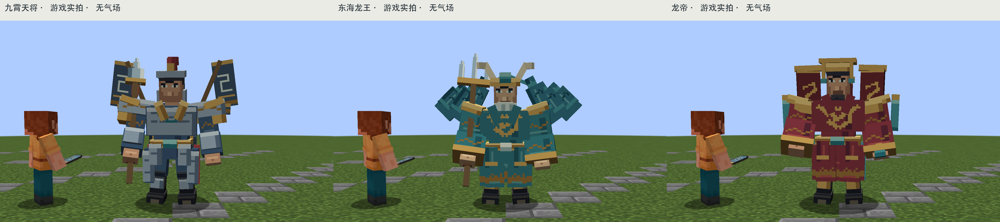
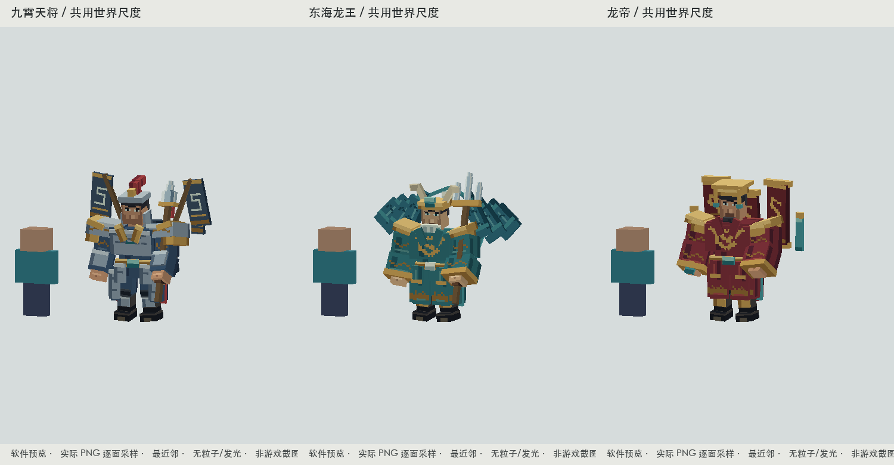
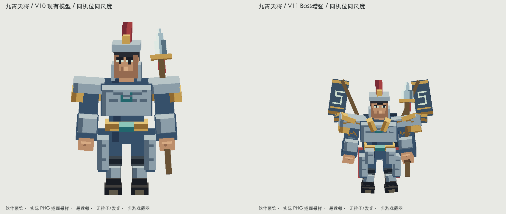
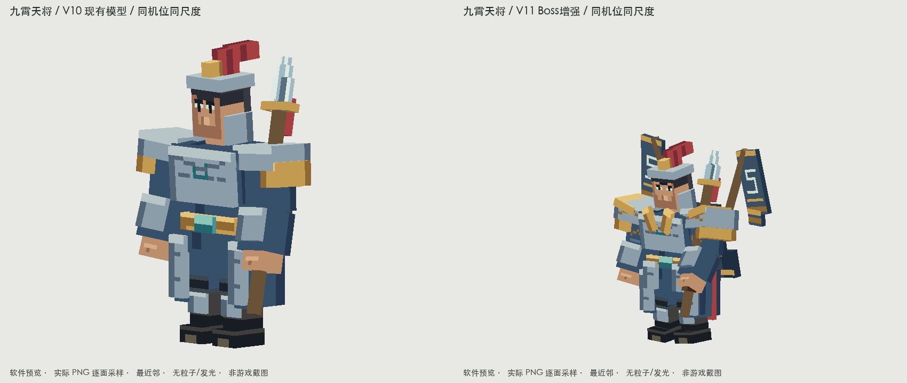
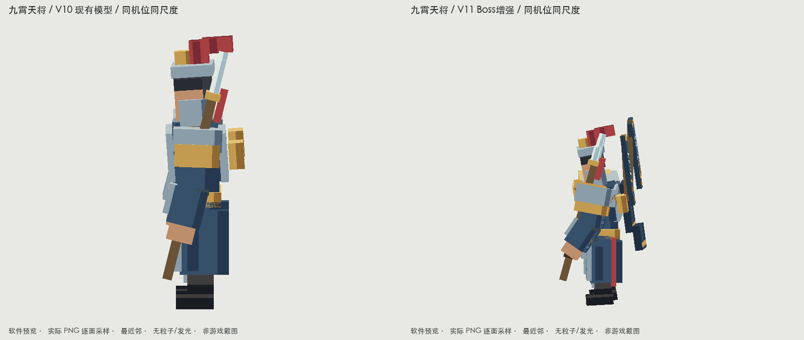
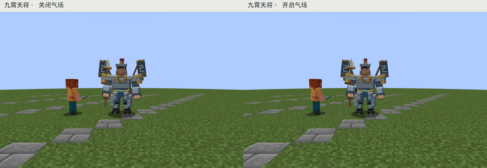
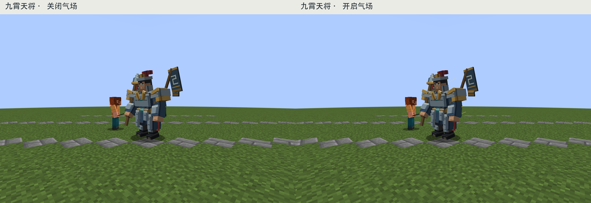
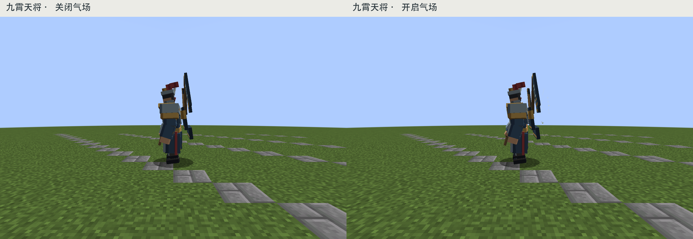
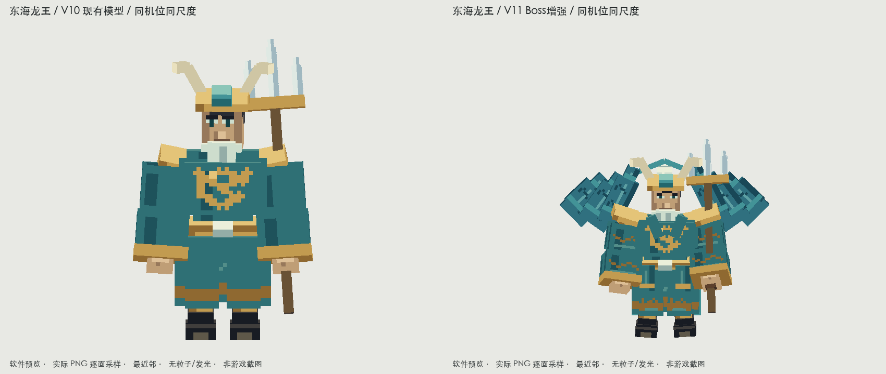
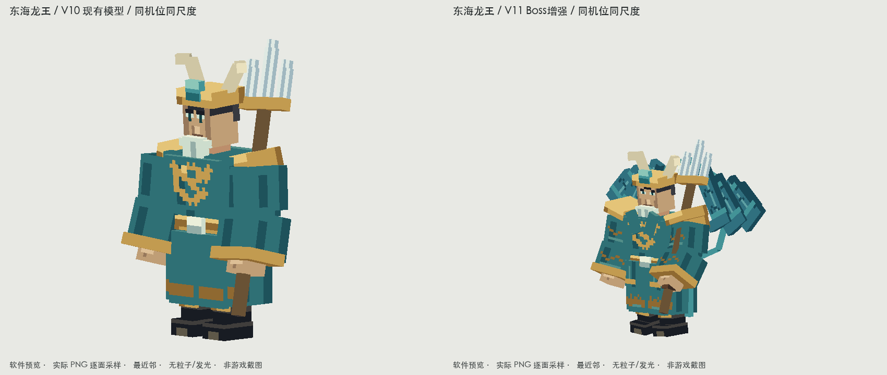

三位人形Boss · 在现有基础上增强 V11
九霄天将、东海龙王、龙帝。保留V10主体与分段骨架，重新分配肩胸体量，补各自的背后识别结构和独立客户端气场。身高约3格，玩家1.8格；几何层和特效层分别验收。
九霄天将 · 东海龙王 · 龙帝 · 离线检查 · 构建与原生检查 · 改动与验证边界
原生游戏同场景比例 · 关闭气场

三张使用同样裁切；完整2800×1800原图在下方每只的截图列表。玩家与Boss在同一深度，没有单独缩放人物。
软件检查总览

软件总览不含粒子，实际气场见下方游戏截图。未采用强光影、低机位或额外资源包。普通日光下单独核对面部、武器、肩胸与背饰。
九霄天将 dynasty:nine_heaven_general
保留钢甲天将与长枪，扩肩厚胸、叠领腰护、两段短披挂、双令旗；屈肘扭身迎战。独立淡金白青符线与低速尘，关闭特效仍保留统帅剪影。
现有V10 → 增强V11 / 同机位、同世界尺度、无特效



正 / 45度 / 侧 / 背 · 原色与基础光照
开启 / 关闭气场 · 普通Forge日光游戏截图
相机位置、70度FOV、1.62格视高、玩家位置与光照相同。待机和粒子按各次实际捕获时刻显示，不是将软件特效叠到截图上。点击查看原始2800×1800图。



所有原生截图、资源哈希、实际粒子发射记录
实际PNG、4倍最近邻、UV方向与近景
六段完整模型动作 / 仅资源回放
idle
walk
attack
cast
hurt
death
六段动作保留原名、时长和循环属性；只补姿态与背饰/衣摆轻动。cast资源回放不等于服务器技能同步。可编辑bbmodel
东海龙王 dynasty:dragon_king
保留人脸冠角白须与三叉戟，增加分层王袍、水纹袖缘、阶梯鳍披、潮轮与龙珠；沉稳俯視。青蓝潮尘、水符和少量水滴独立绘制。
现有V10 → 增强V11 / 同机位、同世界尺度、无特效


正 / 45度 / 侧 / 背 · 原色与基础光照
front-unlit · 逐面真实PNG软件预览front-lit · 逐面真实PNG软件预览45-lit · 逐面真实PNG软件预览side-lit · 逐面真实PNG软件预览back-lit · 逐面真实PNG软件预览silhouette · 逐面真实PNG软件预览scene · 逐面真实PNG软件预览gray-model · 逐面真实PNG软件预览 开启 / 关闭气场 · 普通Forge日光游戏截图
相机位置、70度FOV、1.62格视高、玩家位置与光照相同。待机和粒子按各次实际捕获时刻显示，不是将软件特效叠到截图上。点击查看原始2800×1800图。
所有原生截图、资源哈希、实际粒子发射记录
实际PNG、4倍最近邻、UV方向与近景
texture · 软件检查texture-4x · 软件检查uv-overlay-4x · 软件检查uv-direction · 软件检查close-face · 软件检查close-torso · 软件检查close-hand · 软件检查gray · 软件检查dim · 软件检查 六段完整模型动作 / 仅资源回放
idle
walk
attack
cast
hurt
death
六段动作保留原名、时长和循环属性；只补姿态与背饰/衣摆轻动。cast资源回放不等于服务器技能同步。可编辑bbmodel
龙帝 dynasty:dragon_emperor
保留帝冠赤袍黑须与玉印，增加厚肩、礼领、腰衣、分片龙纹背屏与浮空玉圭；冷静微扭身。背后暗金符印和赤金上升尘；没有新增剑技能。
现有V10 → 增强V11 / 同机位、同世界尺度、无特效
正 / 45度 / 侧 / 背 · 原色与基础光照
front-unlit · 逐面真实PNG软件预览front-lit · 逐面真实PNG软件预览45-lit · 逐面真实PNG软件预览side-lit · 逐面真实PNG软件预览back-lit · 逐面真实PNG软件预览silhouette · 逐面真实PNG软件预览scene · 逐面真实PNG软件预览gray-model · 逐面真实PNG软件预览 开启 / 关闭气场 · 普通Forge日光游戏截图
相机位置、70度FOV、1.62格视高、玩家位置与光照相同。待机和粒子按各次实际捕获时刻显示，不是将软件特效叠到截图上。点击查看原始2800×1800图。
所有原生截图、资源哈希、实际粒子发射记录
实际PNG、4倍最近邻、UV方向与近景
texture · 软件检查texture-4x · 软件检查uv-overlay-4x · 软件检查uv-direction · 软件检查close-face · 软件检查close-torso · 软件检查close-hand · 软件检查gray · 软件检查dim · 软件检查 六段完整模型动作 / 仅资源回放
idle
walk
attack
cast
hurt
death
六段动作保留原名、时长和循环属性；只补姿态与背饰/衣摆轻动。cast资源回放不等于服务器技能同步。可编辑bbmodel
本轮实际复查
先看到原版背后空、直臂和服制节奏弱；第一轮增加三种背饰并调整待机，龙王长板再收为阶梯鳍缘。原生第一轮发现玩家取景裁切及白天气场过弱，改回普通70度FOV、同深度玩家参照，增强细符线而非整身发光。另一次原生检查发现上一只Boss的延迟遗骸容器遮挡下一只；保留正式死亡掉落逻辑，只清理一次性测试世界的遗骸，并逐帧检查场景空气无遮挡。
自然战斗/复杂地形/联机、真实装备握持，以及服务器技能到cast动作同步仍待验证；视觉出击峰值不冒充伤害判定。本轮无新伤害、声音、弱点或战斗系统。